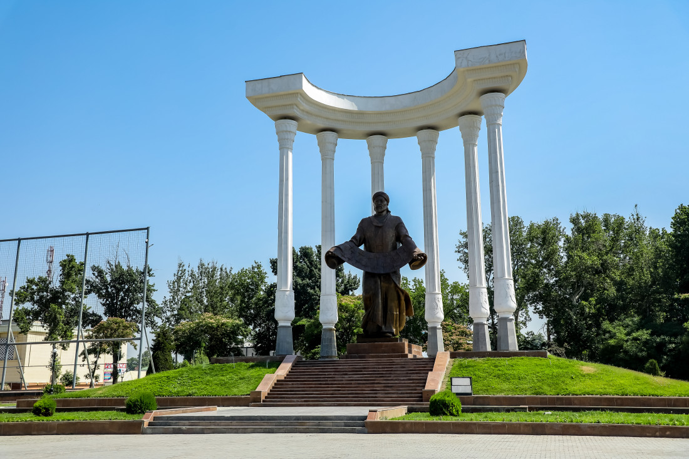

Fergana (also spelled Farghona) is a major city in eastern Uzbekistan and the administrative center of the Fergana Region. Located in the southern part of the fertile Fergana Valley—nestled between the Tian Shan and Alai mountain ranges—the region is often called the "Garden of Uzbekistan" due to its rich agricultural land.Key Information1. History & OriginModern Foundations: Unlike many ancient Silk Road cities in the region, the modern city of Fergana was founded relatively recently in 1877 as a military and administrative hub by the Russian Empire following the annexation of the Kokand Khanate. It was initially named New Marghelan and later renamed Skobelev before taking the name Fergana in 1920.Historical Context: While the modern city itself is 19th-century, the broader Fergana Valley has a history spanning several millennia as a key agricultural oasis and trade stop along the ancient Silk Road.2. Geography & ClimateLocation: Lies approximately 320 km east of Tashkent near the borders of Kyrgyzstan and Tajikistan.Layout: Characterized by a colonial-era grid layout, wide boulevards, and tall shade trees (like plane trees and poplars).Climate: Continental climate with warm, dry summers and short, cold winters.3. Economy & IndustryAgriculture: The surrounding valley is famous for producing high-quality cotton, fruits (pomegranates, grapes, melons), and vegetables.Manufacturing & Refining: Fergana is a major regional industrial center featuring oil refining, chemical plants (fertilizers), and textile production.4. Nearby Cultural & Historical DestinationsFergana serves as the gateway to iconic towns across the valley:Margilan (~15 km away): World-famous center for traditional silk weaving, housing the famous Yodgorlik Silk Factory where Khan-Atlas silk is made by hand.Rishtan (~50 km away): Renowned for its distinctive blue-glazed ceramics crafted using centuries-old pottery techniques.Kokand (~85 km away): The former capital of the Kokand Khanate, famous for the Palace of Khudayar Khan and historical madrasahs.